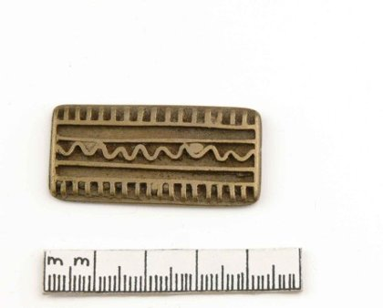

Goldgewicht: geometrisches Dekor [gehört das zu 145?]
10 der 12 ähnlichsten Objekte sind Goldgewichte aus dem Museum Rietberg: Wenn der Vergleichsbestand den Objekttyp enthält, sind die Treffer sehr genau.
Ähnlichste Objekte in anderen Sammlungen